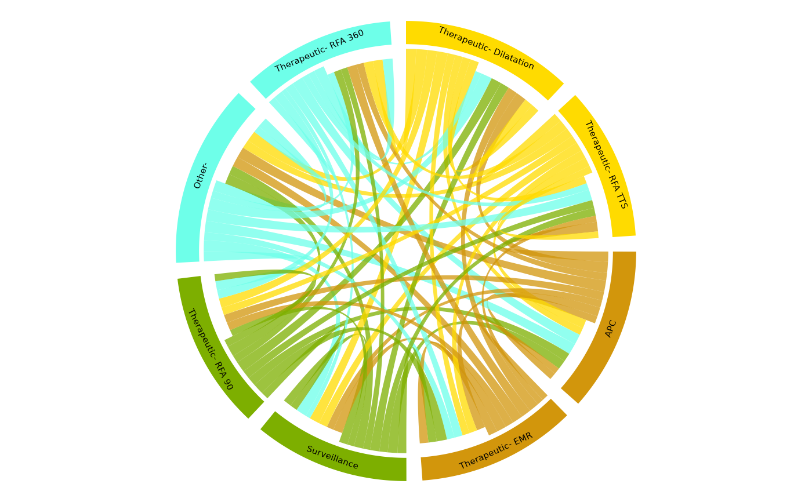

This allows us to look at the overall flow from one type of procedure to another using circos plots. A good example of it's use might be to see how patients move from one state (e.g. having an EMR), to another state (e.g. undergoing RFA)
Arguments
- dataframe
dataframe
- Endo_ResultPerformed
the column containing the date of the procedure
- HospNum_Id
Column with the patient's unique hospital number
- ProcPerformed
The procedure that you want to plot (eg EMR, radiofrequency ablation for Barrett's but can be any dscription of a procedure you desire)
Examples
# This function builds a circos plot which gives a more aggregated
# overview of how patients flow from one state to another than the
# SurveySankey function
# Build a list of procedures
Event <- list(
x1 = "Therapeutic- Dilatation",
x2 = "Other-", x3 = "Surveillance",
x4 = "APC", x5 = "Therapeutic- RFA TTS",
x5 = "Therapeutic- RFA 90",
x6 = "Therapeutic- EMR", x7 = "Therapeutic- RFA 360"
)
EndoEvent <- replicate(2000, sample(Event, 1, replace = FALSE))
# Merge the list with the Myendo dataframe
fff <- unlist(EndoEvent)
fff <- data.frame(fff)
names(fff) <- "col1"
Myendo$EndoEvent<-fff$col1
names(Myendo)[names(Myendo) == "HospitalNumber"] <- "PatientID"
names(Myendo)[names(Myendo) == "fff$col1"] <- "EndoEvent"
# Myendo$EndoEvent<-as.character(Myendo$EndoEvent)
# Run the function using the procedure information (the date of the
# procedure, the Event type and the individual patient IDs)
hh <- PatientFlow_CircosPlots(Myendo, "Dateofprocedure", "PatientID", "EndoEvent")
#> Using n as value column: use value.var to override.
#> Aggregation function missing: defaulting to length

rm(Myendo)
rm(EndoEvent)